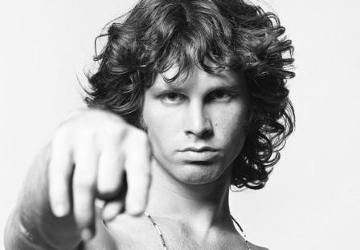

Джеймс Ду́глас Мо́ррисон
Дата рождения: 8 декабря 1943г.
Джим Моррисон родился в Мелборне, штат Флорида.В Университете штата Флорида в Таллахасси Джим изучал историю эпохи Возрождения, в частности творчество Иеронима Босха и актёрскую игру, играл в студенческих постановках пьес. После этого Джим учился на кинематографическом факультете Калифорнийского университета, но относился к учёбе не очень серьёзно, и больше интересовался вечеринками и алкоголем. В конце 1964 Джим на рождество приехал к родителям. Это был последний раз, когда он виделся с ними. Через несколько месяцев Джим написал письмо родителям, в котором сообщал, что хочет создать рок-группу. Но не нашёл понимания у отца, который ответил, что это неудачная шутка. После этого на вопрос о родителях Джим всегда говорил, что они умерли. Судя по всему, родители тоже прохладно относились к Джиму, потому что даже через много лет после его смерти отказывались комментировать творчество сына. Фильм, который был его выпускной работой, не восприняли ни преподаватели, ни студенты. Джим очень переживал и даже хотел покинуть университет за две недели до окончания, но преподаватели отговорили его от этого решения.
Учась в UCLA, Джим познакомился и подружился с Рэем Манзареком. Вместе они организовали группу The Doors. Через некоторое время к ним присоединились барабанщик Джон Денсмор и друг Джона, Робби Кригер. Кригер был представлен по рекомендации Денсмора и был затем включен в группу. The Doors взяли название группы из заголовка книги «The Doors of Perception» («Двери Восприятия») Олдоса Хаксли (ссылка на «открытие» «дверей» восприятия через употребление психоделиков). Хаксли, в свою очередь, взял заглавие своей книги из стихотворения английского поэта-визионера Уильяма Блейка: «If the doors of perception were cleansed, every thing would appear to man as it is, infinite» («Если бы двери восприятия были чисты, всё предстало бы таким, как есть — бесконечным»). Джим сказал друзьям, что он хочет быть этой «дверью восприятия». Название группы было принято единогласно. Группа начала выступать по местным барам и их выступления были откровенно слабыми, отчасти из-за дилетантизма музыкантов, отчасти от робости Джима Моррисона: поначалу он даже стеснялся поворачиваться лицом к публике и пел спиной к залу. Кроме того Джим часто приходил на выступления нетрезвым. К счастью для группы, у них была армия девушек-поклонниц, и очередной «последний раз» рассерженного владельца клуба оборачивался звонками девиц с вопросами когда же они снова увидят «того волосатого парня». Через полгода у группы появилась возможность выступать в лучшем клубе на Сансет Стрип — «Whisky a Go Go». Вскоре группу заметил продюсер Пол Ротшильд с недавно открывшегося лейбла Elektra Records, выпускавшего до этого только джазовых исполнителей, который рискнул предложить Doors контракт (группа вошла в обойму Электры наряду с такими гигантами, как Love). Употребление галлюциногенов, в частности LSD, оказало непосредственное влияние на творчество Моррисона и Doors: мистицизм и шаманизм стали частью сценического акта. «I am a Lizard king. I can do anything» — сказал про себя Джим в одной из песен («Я король ящериц. Я могу все»). Группе The Doors удалось стать не только музыкальным явлением, но и культурным феноменом. Однако популярности The Doors во многом способствовала уникальная харизматичная личность и глубокая лирика их лидера Джима Моррисона. Моррисон был чрезвычайно эрудированным человеком, увлекался философией Ницше, культурой американских индейцев, поэзией европейских символистов и многим другим. В 1970-м году Джим женился на практикующей ведьме Патриции Кеннили; свадьба была проведена по кельтскому колдовскому ритуалу. В наше время в Америке Джима Моррисона считают не только признанным музыкантом, но и выдающимся поэтом: его иногда ставят в один ряд с Уильямом Блейком и Артюром Рембо. Моррисон привлекал поклонников группы своим необычным поведением. Он вдохновлял молодых бунтарей той эпохи, а загадочная смерть музыканта ещё более мистифицировала его в глазах поклонников. Джим Моррисон похоронен в Париже на кладбище Пер-Лашез